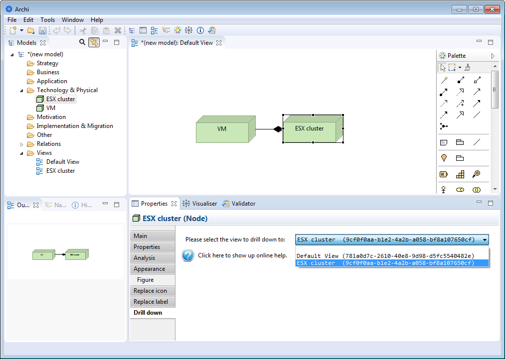

Specialization plugin
Drill down

When an element is selected in a view, a new "Drill down" tab is shown in the properties window.
When a view is selected as drill down, this view will be opened when the user double clicks on the view element.
In fact, selecting a view leads to store the view's internal ID inside the "drill down" property ofthe element. When the user double-clicks on the element, then the view ID is retrieved from the element's properties and opened.
To remove the drill down functionality on an element, one may select the empty line in the drill down tab, or delete the "drill down" property of the element.